Еда и баффы
ℹ️ Бафф держится указанное время после еды. Сытость — сколько голода закрывает блюдо.
⚔️ Лучшее для боя
Карри с мясом Маммореста+25% Атака
Никудзяга из Эрмурга+25% Защита
Чизбургер с Моззариной+20% Атака, +50% Голод медленнее
🏠 Для базы
Киш с грибами+50% Голод медленнее, +50% Рассудок падает медленнее
Чаудер из Думада+50% Скорость работы, +25% Голод медленнее
Гамбургер с Моззариной+50% Скорость работы, +25% Рассудок падает медленнее
🍲 На старте (Котелок)
Дзингискан из Ламболла+20% Рассудок падает медленнее, +30% Скорость работы
Цзяоцзы с мясом Рашоа+25% Голод медленнее, +10% Атака
Соте из мяса Чикипи+30% Скорость работы
Пицца
🛠 Скорость работы +30%🍖 Голод медленнее +25%
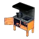
Электрическая кухня и вышеДзингискан из Ламболла
🧠 Рассудок падает медленнее +20%🛠 Скорость работы +30%
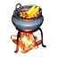
Котелок и вышеКараагэ из Чикипи
🛠 Скорость работы +30%🧠 Рассудок падает медленнее +25%
Электрическая кухня и выше
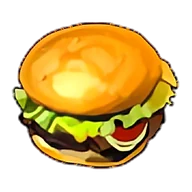
Гамбургер с Моззариной🛠 Скорость работы +50%🧠 Рассудок падает медленнее +25%
🍖Сытость162
⏱Действует10 мин
Из чего
Электрическая кухня и выше
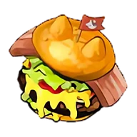
Чизбургер с Моззариной⚔️ Атака +20%🍖 Голод медленнее +50%
Электрическая кухня и выше
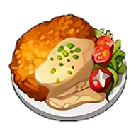
Келпси-фрай🛡 Защита +10%🧠 Рассудок падает медленнее +50%
🍖Сытость108
⏱Действует10 мин
Из чего
Электрическая кухня и выше
Чаудер из Думада
🛠 Скорость работы +50%🍖 Голод медленнее +25%
Электрическая кухня и выше
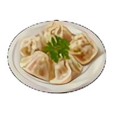
Цзяоцзы с мясом Рашоа🍖 Голод медленнее +25%⚔️ Атака +10%
Котелок и выше
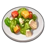
Жареные овощи🛠 Скорость работы +10%🛡 Защита +10%
🍖Сытость54
⏱Действует10 мин
Из чего
Котелок и выше
Спринг-роллы
🧠 Рассудок падает медленнее +50%⚔️ Атака +10%
Электрическая кухня и выше
Гратен
🍖 Голод медленнее +50%🛡 Защита +10%
Электрическая кухня и выше
Киш с грибами
🍖 Голод медленнее +50%🧠 Рассудок падает медленнее +50%
Большая кухня и выше
Студенистое желе Джелиэтты
✨ Опыт +10%⚔️ Атака +10%
🍖Сытость58
⏱Действует10 мин
Из чего
Котелок и выше
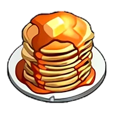
Панкейки🧠 Рассудок падает медленнее +25%
Котелок и выше
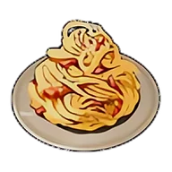
Карбонара🛡 Защита +20%
Электрическая кухня и выше
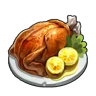
Соте из мяса Чикипи🛠 Скорость работы +30%
Котелок и выше
Тушёный Эрмург
🧠 Рассудок падает медленнее +20%
🍖Сытость92
⏱Действует10 мин
Из чего
Котелок и выше
Локо-моко из Иктирдира
⚔️ Атака +20%
Электрическая кухня и выше
Загадочный гриб
🔻 Голод быстрее 25%
🍖Сытость1
⏱Действует1 мин
Из чегорецепта нет
Не готовится — только найти
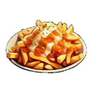
Картофель фри🧠 Рассудок падает медленнее +25%
Котелок и выше
Якисоба с мясом Брончерри
⚔️ Атака +20%
Электрическая кухня и выше
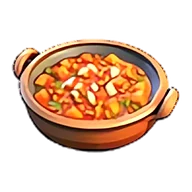
Минестроне🛠 Скорость работы +40%
Электрическая кухня и выше
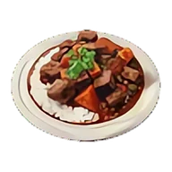
Карри с мясом Маммореста⚔️ Атака +25%
Большая кухня и выше
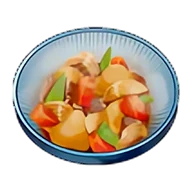
Никудзяга из Эрмурга🛡 Защита +25%
Большая кухня и выше
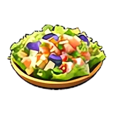
Салат из морепродуктов✨ Опыт +20%
Электрическая кухня и выше
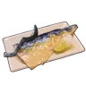
Жареный Скатласс с солью💥 Не отбрасывает
🍖Сытость90
⏱Действует10 мин
Из чего
Костер и выше